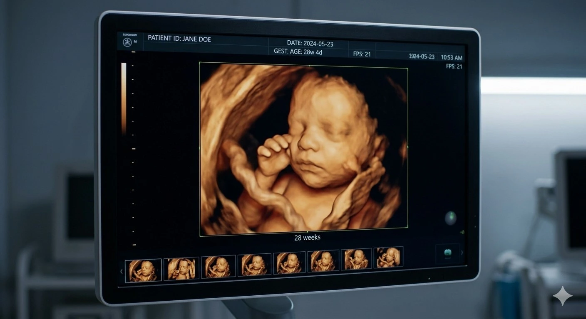
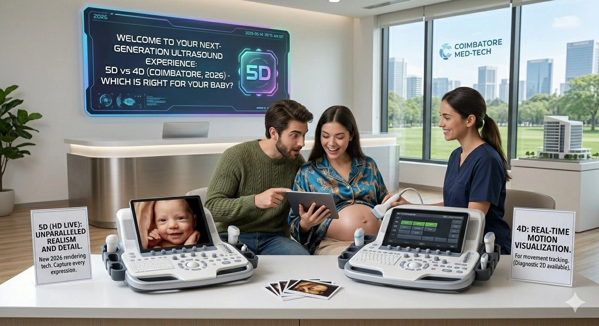

If you have been searching for a pregnancy scan near me in Madurai and found yourself puzzled by terms like 5D ultrasound, HD Live, and 4D baby scan — you are not alone. In 2026, the vocabulary of prenatal imaging technology has expanded well beyond the simple black-and-white 2D scan that previous generations knew, and expectant parents deserve a clear, honest explanation of what each modality actually offers. The 5D vs 4D ultrasound difference is real, but it is also frequently overstated by centres chasing bookings rather than delivering genuine clinical value. This guide cuts through the marketing and explains — in plain language — what 4D and 5D ultrasound actually are, how realistic fetal imaging works in practice, what determines the quality of a clear baby face scan, how 4D baby scan price compares across scan types, whether 5D ultrasound Madurai is available and relevant to you, and why the choice of best pregnancy scan centre matters far more than which dimensional label is on the brochure. At Meera Scans — Madurai's trusted best pregnancy scan centre — we guide every patient through this decision before their appointment so that the scan they book is the one that gives them the images they will cherish. Contact us today or call +91-9042883031 to get personalised advice on 5D ultrasound Madurai availability and to book your pregnancy scan near me appointment.
Understanding the Dimensions: What 2D, 3D, 4D, and 5D Actually Mean
Before tackling the 5D vs 4D ultrasound difference directly, it is worth grounding the conversation in what each dimensional label means — because the numbering is not always as intuitive as it sounds, and several of the terms are used inconsistently across different prenatal imaging technology providers.
2D ultrasound is the traditional flat, greyscale image that has been the clinical workhorse of obstetric scanning for decades. It shows a cross-sectional slice of the baby and is still the gold standard for all clinical measurements — fetal biometry, amniotic fluid index, placental position, Doppler flow studies. Every diagnostic component of any pregnancy scan near me — whether offered as 4D or 5D — is underpinned by 2D ultrasound data.
3D ultrasound takes multiple 2D slices rapidly and reconstructs them into a static three-dimensional surface image. This was the first technology that allowed parents to see a recognisable still photograph of their baby's face rather than an anatomical cross-section.
4D ultrasound adds the dimension of time — showing the 3D surface image updating in real time, typically at 15–25 frames per second. This creates the live moving video that defines the modern 4D baby scan experience: watching your baby yawn, blink, smile, or suck a thumb as it happens. The 4D baby scan price at any reputable best pregnancy scan centre includes this real-time video delivered digitally on the day.
5D ultrasound — marketed under proprietary brand names such as HD Live (GE Healthcare) and SonoVCAD — is not a genuinely separate physical dimension. The fifth dimension in this context refers to an advanced software rendering layer applied to the same 4D raw data. A virtual light source is added to the rendered image, simulating how natural light would fall on the baby's skin surface. The result is a significantly more photorealistic, skin-textured image that moves beyond the classic amber 4D appearance toward something that resembles a studio photograph of a newborn. This is the core of the 5D vs 4D ultrasound difference — and understanding it helps parents make an informed choice when searching for 5D ultrasound Madurai or comparing centres.
The 5D vs 4D ultrasound difference is a rendering difference, not a safety, sound wave, or clinical difference. Both use identical ultrasound technology and frequency. The 5D label describes how the captured image is processed and displayed — producing realistic fetal imaging that is closer to a photograph. Patients searching for pregnancy scan near me should ask specifically what rendering technology their chosen best pregnancy scan centre uses.
5D vs 4D Ultrasound Difference: A Side-by-Side Comparison
The table below sets out the 5D vs 4D ultrasound difference across every dimension that matters to expectant parents choosing between the two modalities — from image quality and realistic fetal imaging output to 4D baby scan price and clinical applicability.
| Feature | 4D Ultrasound | 5D Ultrasound (HD Live) |
|---|---|---|
| Image type | Real-time 3D surface rendering in classic amber/gold tones; moving video of fetal movement as it happens | Real-time 3D surface rendering with HD virtual lighting simulation; produces photorealistic skin-textured images — the defining advance in prenatal imaging technology for 5D |
| Realistic fetal imaging quality | Excellent — the 4D baby scan has been the gold standard for realistic fetal imaging since the mid-2000s and remains exceptional when performed at the right gestational week at a quality best pregnancy scan centre | Superior to 4D in photorealism — the HD lighting simulation adds depth and skin texture that makes the clear baby face scan image look significantly more like a photograph of a newborn |
| Clear baby face scan output | Highly detailed facial imaging at 26–30 weeks; expressive movements captured in real time; amber surface rendering shows all features clearly in favourable conditions | Highest-resolution clear baby face scan currently available in clinical prenatal imaging technology; skin texture and shadow depth create a near-photographic quality portrait when conditions are optimal |
| Clinical diagnostic value | Equivalent to 5D — all obstetric measurements, fetal biometry, amniotic fluid assessment, and anomaly screening use the same underlying 2D data regardless of whether 4D or 5D rendering is applied | Equivalent to 4D — the 5D rendering is applied to the surface image only; it does not change or improve the clinical diagnostic measurements that your obstetrician needs from any pregnancy scan near me |
| Safety | Identical safe diagnostic ultrasound frequencies used in all standard obstetric scanning; no additional exposure in 4D vs 2D or 3D | Identical safety profile to 4D — the 5D difference is in software rendering, not in the ultrasound beam. 5D ultrasound Madurai is as safe as any other modality |
| 4D baby scan price comparison | The standard 4D baby scan price at Meera Scans is all-inclusive: diagnostic assessment, 4D imaging, photos, video, and written report with no hidden charges | 5D or HD Live rendering may carry a modest premium over the standard 4D baby scan price at some centres due to equipment and software licensing costs; always confirm all-inclusive total when comparing |
| Equipment required | Dedicated obstetric 4D ultrasound machine; available at all quality best pregnancy scan centre facilities including Meera Scans | Requires a machine with licensed HD Live or equivalent 5D rendering software — not available at all centres; patients searching for 5D ultrasound Madurai should confirm equipment availability before booking |
| Best gestational week | 26–30 weeks for the clearest realistic fetal imaging and optimal clear baby face scan quality | Same as 4D — 26–30 weeks is the optimal window for 5D ultrasound Madurai and for any prenatal imaging technology producing facial images |
Realistic Fetal Imaging: What Actually Determines Image Quality
Parents comparing the 5D vs 4D ultrasound difference often focus almost entirely on the technology label — 5D, 4D, HD Live — when the variables that most determine the quality of their realistic fetal imaging experience are almost entirely separate from that label. Understanding what actually produces a superb clear baby face scan image — whether in 4D or 5D — is the most important piece of knowledge any expectant parent can have before booking a pregnancy scan near me.
Factor 1 — Gestational Timing: The Most Important Variable in Realistic Fetal Imaging
No prenatal imaging technology — neither 4D nor 5D ultrasound Madurai — can compensate for poor gestational timing. The optimal window for any realistic fetal imaging session producing a genuine clear baby face scan is 26 to 30 weeks of pregnancy. Before 24 weeks, facial fat deposits are absent and the baby looks skeletal rather than the soft, recognisable face parents are hoping to see. After 32 weeks, amniotic fluid decreases, the baby's head often engages in the pelvis, and the face is frequently obscured by limbs or the placenta — making a quality clear baby face scan significantly less reliable regardless of the prenatal imaging technology in use.
Factor 2 — Patient Hydration: The Acoustic Foundation of Every Clear Baby Face Scan
Amniotic fluid is the acoustic medium through which ultrasound waves travel to produce any realistic fetal imaging output. When fluid volume is adequate and clarity is high — achieved through consistent daily hydration of 1.5–2 litres for 3–5 days before the appointment — the resulting image is sharp and detailed in both 4D and 5D ultrasound Madurai. Dehydrated patients will see granular, streaked images regardless of whether their best pregnancy scan centre uses 4D or 5D prenatal imaging technology. The acoustic foundation is what the rendering algorithm works with — and no software, however advanced, can recover a clear baby face scan from poor base data.
Factor 3 — Fetal Position: The Variable That Decides Everything on the Day
A baby lying with its face toward the probe in an anterior position will produce a spectacular clear baby face scan in either 4D or 5D. A baby in a posterior position, with its face turned toward the mother's spine, will not produce clear facial images in either modality — no matter how advanced the prenatal imaging technology, no matter what the 4D baby scan price paid, and no matter how reputable the best pregnancy scan centre chosen. This is why the gestational window of 26–30 weeks matters so much — the baby is still mobile enough to shift position during the appointment, giving the sonologist and patient the best chance of achieving the ideal imaging angle for realistic fetal imaging.
Factor 4 — Equipment Quality: The Clinic Variable That Patients Can Control by Choosing Wisely
The ultrasound machine itself is the clinic-side variable that patients control by choosing the right best pregnancy scan centre. A basic B-mode machine with a limited 3D mode cannot produce the image quality of a dedicated obstetric 4D system — and a dedicated 4D system operated by an experienced sonologist will produce better realistic fetal imaging than a 5D ultrasound Madurai rendering applied to data from an inferior machine. The technology label is less important than the underlying equipment quality and the skill of the sonologist operating it. This is the most important practical conclusion of any honest 5D vs 4D ultrasound difference comparison: choose the best pregnancy scan centre with the best equipment and the most experienced team, and the images will follow.

Who Should Choose 5D Ultrasound in 2026?
Given the 5D vs 4D ultrasound difference explained above, the question of who should specifically choose 5D ultrasound Madurai over a standard 4D baby scan has a straightforward answer — with one important caveat.
5D ultrasound is the right choice for parents who place the highest value on photorealistic image output — the closest approximation to what their baby will look like as a newborn. The HD lighting simulation that defines 5D prenatal imaging technology produces portraits of extraordinary clarity and emotional impact, and for parents who intend to frame, print, or share these images widely, the upgrade from standard 4D amber rendering to HD Live 5D quality is genuinely meaningful. If a clear baby face scan in near-photographic quality is the primary reason for booking — rather than clinical monitoring or movement observation — and 5D ultrasound Madurai is available at a reputable best pregnancy scan centre, it is worth asking about.
The caveat is this: if the available 5D ultrasound Madurai option means accepting inferior equipment, a less experienced sonologist, or a centre that cannot deliver a complete clinical diagnostic assessment alongside the 5D imaging session, then a high-quality 4D baby scan at a genuine best pregnancy scan centre like Meera Scans will produce better overall results — both clinically and in terms of realistic fetal imaging output — than a 5D render at a centre with inferior fundamentals.
Who Should Choose 4D Ultrasound in 2026?
For the majority of expectant parents searching for a pregnancy scan near me in Madurai in 2026, a high-quality 4D baby scan at a proven best pregnancy scan centre remains the best overall recommendation — and the reasons go beyond simply comparing the 5D vs 4D ultrasound difference in image rendering.
- Complete clinical diagnostic value — a 4D baby scan at Meera Scans includes a full obstetric assessment: fetal biometry, amniotic fluid index, placental position, and Doppler studies if indicated. The 4D baby scan price covers everything your obstetrician needs, not just the keepsake imaging session
- Real-time movement capture — 4D prenatal imaging technology captures your baby's expressions, yawns, stretches, and movements as they happen. For many parents, the moving video is more emotionally significant than any still image — 5D or 4D
- Outstanding clear baby face scan quality — at the optimal gestational window of 26–30 weeks, with good hydration and a cooperative fetal position, the realistic fetal imaging from a high-quality 4D machine at the best pregnancy scan centre is genuinely breathtaking. The majority of parents leave completely delighted with their images
- Transparent all-inclusive 4D baby scan price — Meera Scans' 4D baby scan price covers the diagnostic assessment, real-time 4D session, digital photos, video clips, and written specialist report with no hidden charges. The total at billing matches the total at booking
- Widely available at all quality centres — patients searching for pregnancy scan near me will find that high-quality 4D imaging is more consistently available across reputable centres than specialist 5D HD Live equipment, making a quality result more predictable
4D Baby Scan Price in Madurai: What Should Be Included
Whether you are booking a 4D or investigating 5D ultrasound Madurai availability, understanding what a genuinely all-inclusive 4D baby scan price should cover is essential before comparing figures across centres. The headline number quoted for any pregnancy scan near me is only meaningful when compared on a like-for-like basis — and many centres in Madurai do not quote like-for-like.
| Inclusion | Should Be in the 4D Baby Scan Price? | At Meera Scans |
|---|---|---|
| Complete clinical diagnostic assessment (biometry, AFI, placenta, presentation) | Yes — always. A 4D session without clinical assessment is a keepsake service, not a diagnostic scan. Confirm this with any best pregnancy scan centre before booking | Included |
| Real-time 4D or 5D imaging session | Yes — the core of the appointment and the primary reason for the 4D baby scan price premium over a standard 2D scan | Included |
| Digital photographs | Yes — the still images captured during the clear baby face scan session should be delivered digitally as part of the 4D baby scan price, not charged separately as a media fee | Included |
| 4D video clip — WhatsApp or email delivery | Yes — the real-time video is the defining deliverable of any realistic fetal imaging session; same-day digital delivery to WhatsApp or email should be standard at any best pregnancy scan centre | Included |
| Written sonologist report | Yes — the report documenting fetal biometry, gestational age, AFI, and presentation is what your obstetrician needs. It must be part of any legitimate 4D baby scan price | Included |
| Pre-scan preparation guidance | Should be provided — timing advice, hydration protocol, food guidance — since patient preparation is one of the biggest factors in realistic fetal imaging quality. A best pregnancy scan centre gives this to every patient before arrival | Included |
| Hidden registration, film, or media charges at billing | No — the 4D baby scan price quoted at booking should be the total payable. If additional charges appear at billing, the quoted price is not a valid comparison figure for any pregnancy scan near me search | Never charged |
To confirm the current all-inclusive 4D baby scan price and 5D ultrasound Madurai availability at Meera Scans, contact our team directly or call +91-9042883031. The price quoted is the total price — no additions at billing, no separate media charges, no report fees.
How to Prepare for the Best Possible 4D or 5D Scan Result
Whether you book a 4D baby scan or specifically request 5D ultrasound Madurai technology at your best pregnancy scan centre, the preparation you do in the days before your appointment is one of the biggest determinants of the realistic fetal imaging and clear baby face scan quality you experience. The following steps are recommended by Meera Scans for all patients — regardless of which prenatal imaging technology is used on the day.
Book at 26–30 Weeks — The Non-Negotiable Timing Rule
This is the most important preparation step for any realistic fetal imaging session. Contact the best pregnancy scan centre — Meera Scans — before selecting a date and confirm the ideal week based on your current gestation. No amount of prenatal imaging technology advancement compensates for booking too early or too late. The 5D vs 4D ultrasound difference is irrelevant if timing is wrong.
Hydrate for 3–5 Days Before — The Acoustic Foundation
Drink 1.5–2 litres of water daily for at least three to five days before your appointment. Consistent systemic hydration improves amniotic fluid volume and clarity, which is the acoustic medium through which any prenatal imaging technology — 4D or 5D ultrasound Madurai — produces the clear baby face scan image. Avoid caffeine on the day of the scan.
Eat a Light Glucose Snack 30–60 Minutes Before
A small portion of fresh fruit, fruit juice, or plain biscuits 30 to 60 minutes before your appointment stimulates fetal activity through a gentle rise in maternal blood glucose. An active baby in a good position produces the expressive, dynamic realistic fetal imaging that makes the 4D baby scan price worthwhile. Avoid heavy or oily meals immediately before the scan.
Wear Loose Two-Piece Clothing
Loose clothing allows the sonographer unobstructed probe access across the lower abdomen throughout the session. This is a simple but genuinely useful step that any best pregnancy scan centre will advise — applicable equally for 4D and 5D ultrasound Madurai sessions.
Arrive Relaxed and Early — Follow the Sonologist's Guidance
Arrive ten minutes before your appointment at Meera Scans. A relaxed abdominal wall transmits ultrasound more efficiently, and the sonologist has proven techniques for encouraging a repositioning baby — including short walks and positional changes. Trusting this process during your pregnancy scan near me appointment is the final step that makes all the preparation worthwhile.

Why Meera Scans Is the Best Pregnancy Scan Centre in Madurai for 4D and 5D Imaging
When parents in Madurai search for pregnancy scan near me in 2026, Meera Scans appears — and stays — at the top of their shortlist for reasons that go well beyond technology labels. As the best pregnancy scan centre in Madurai, we offer every patient the combination of equipment, expertise, preparation support, and transparent pricing that produces genuinely exceptional realistic fetal imaging outcomes — whether in 4D or with 5D ultrasound Madurai HD Live rendering where available.
- Advanced obstetric imaging equipment — dedicated high-resolution 4D obstetric ultrasound machines capable of producing the finest realistic fetal imaging and clear baby face scan quality in Madurai, with 5D ultrasound Madurai HD Live rendering available — contact us to confirm current availability
- Optimal gestational timing guidance — every patient receives personalised advice on the ideal booking week for realistic fetal imaging at their specific stage of pregnancy, before confirming an appointment. This single step prevents the majority of disappointing clear baby face scan outcomes
- Complete pre-scan preparation guidance — hydration protocol, nutrition advice, clothing guidance, and gestational timing — all provided before the appointment so every patient arrives prepared for the best possible prenatal imaging technology result
- Transparent all-inclusive 4D baby scan price — diagnostic assessment, 4D or 5D imaging session, digital photos, video clips, and written sonologist report all included. The 4D baby scan price quoted at booking is the total payable — no surprises at billing
- Experienced obstetric sonologists on-site — who manage difficult fetal positions, anterior placentas, and all clinical variables that affect realistic fetal imaging quality with the patience and skill the best pregnancy scan centre in Madurai demands
- Same-day digital delivery — 4D or 5D photos and video clips sent to WhatsApp or email on the day of the appointment; your clear baby face scan images are ready to share before you leave
- Trusted by 10,000+ patients in Madurai — the best pregnancy scan centre for every stage of pregnancy, from early viability scans through to third-trimester growth monitoring and 5D ultrasound Madurai keepsake imaging
For a personalised answer to the 5D vs 4D ultrasound difference as it applies to your specific pregnancy, to confirm 5D ultrasound Madurai availability, to get the current all-inclusive 4D baby scan price, or to book your pregnancy scan near me at the best pregnancy scan centre in Madurai, contact Meera Scans today or call +91-9042883031. Same-day appointments are available subject to schedule.
Frequently Asked Questions
What is the difference between 5D and 4D ultrasound?
The 5D vs 4D ultrasound difference is a rendering difference. 4D shows real-time moving 3D images in classic amber tones. 5D ultrasound — marketed as HD Live — adds a virtual lighting simulation to produce a more photorealistic, skin-textured clear baby face scan image. Both use identical safe ultrasound technology; the 5D distinction is entirely in how the captured data is visually processed. Both modalities are available for pregnancy scan near me searches in Madurai — contact Meera Scans to confirm current availability.
Is 5D ultrasound available in Madurai?
5D ultrasound Madurai availability depends on the HD Live or equivalent rendering software installed at each centre. Meera Scans — the best pregnancy scan centre in Madurai — offers advanced obstetric imaging with high-resolution 4D and HD-quality realistic fetal imaging. Contact us at +91-9042883031 to confirm current 5D ultrasound Madurai availability and the associated 4D baby scan price.
What is the 4D baby scan price at Meera Scans?
The 4D baby scan price at Meera Scans is all-inclusive: diagnostic clinical assessment, real-time 4D or 5D imaging session, digital photos, video clip delivery to WhatsApp or email, and a written sonologist report — all covered. There are no hidden charges. Contact us at +91-9042883031 for the current 4D baby scan price and to book your pregnancy scan near me appointment.
Which is better — 5D or 4D ultrasound for seeing my baby's face?
For a clear baby face scan, 5D produces more photorealistic images due to HD lighting simulation. However, the quality of any realistic fetal imaging — 4D or 5D — depends far more on gestational timing (26–30 weeks is optimal), hydration, fetal position, and equipment quality than on the 5D vs 4D ultrasound difference in rendering. The best pregnancy scan centre will advise you on all these factors and maximise your result in either modality.
What week is best for a 5D or 4D scan?
The optimal window for both 4D and 5D ultrasound Madurai is 26 to 30 weeks of pregnancy. At this stage, amniotic fluid volume is generous for clear prenatal imaging technology results, fetal facial fat deposits are developed, and the baby still has space to move into a favourable position. Patients searching for pregnancy scan near me should book within this window for the best clear baby face scan outcome.
Does 5D ultrasound use different sound waves from 4D?
No. The 5D vs 4D ultrasound difference is entirely in the rendering software — not in the ultrasound beam. Both modalities use the same standard diagnostic frequencies established as safe throughout pregnancy. The HD Live 5D layer is applied after image capture. 5D ultrasound Madurai and 4D baby scan share an identical safety profile — confirmed safe by all major obstetric imaging bodies and prenatal imaging technology guidelines.
What makes Meera Scans the best pregnancy scan centre in Madurai?
Meera Scans is the best pregnancy scan centre in Madurai because of its dedicated high-resolution obstetric equipment producing exceptional realistic fetal imaging and clear baby face scan quality, experienced on-site obstetric sonologists, transparent all-inclusive 4D baby scan price with same-day digital delivery, complete pre-scan preparation guidance, and a patient trust base of over 10,000 families across Madurai and Tamil Nadu. The top result for any pregnancy scan near me search in the region.
Useful Resources
Trusted clinical references for 4D and 5D obstetric ultrasound, prenatal imaging technology standards, and antenatal care guidelines for patients in Madurai and Tamil Nadu.
-
ISUOG Practice Guidelines — 3D/4D Obstetric Ultrasound International Society of Ultrasound in Obstetrics and Gynaecology clinical guidelines on 3D/4D and HD Live 5D prenatal imaging technology, covering standards for realistic fetal imaging and clear baby face scan quality in obstetric practice.
-
NCBI — Antenatal Ultrasound: Clinical Standards and Evidence Peer-reviewed reference on antenatal ultrasound protocols, quality standards in obstetric imaging, and the clinical evidence base for 3D/4D/5D ultrasound in pregnancy care across India and internationally.
-
WHO Maternal Health and Antenatal Care World Health Organization guidance on antenatal care and recommended ultrasound examinations during pregnancy — the clinical framework within which 4D and 5D ultrasound Madurai services operate at every best pregnancy scan centre.
-
PC-PNDT Act — Government of India Official Portal Official portal for PC-PNDT Act compliance — registration requirements, patient rights, and legal obligations for all pregnancy scan near me providers including 4D and 5D baby scan clinics in Madurai and Tamil Nadu.
-
Practo — Pregnancy Scan Centres in Madurai Compare pregnancy scan near me options in Madurai — including patient reviews, 4D baby scan price comparisons, and online appointment booking for 4D and 5D ultrasound Madurai services.